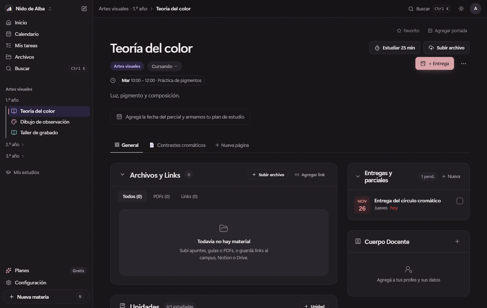

Donde crece
lo que aprendés.
Tus apuntes, tus clases y un plan para el próximo parcial.
Un lugar al que volver cada vez que te sentás a estudiar.

Inicio · Una sugerencia concreta para empezar a estudiar.Capturas de Nido con datos de ejemplo
De la cursada
al parcial.
Abrí una materia y tenés a mano los apuntes, los archivos y las unidades que entran en el examen. Marcá lo que ya estudiaste para saber por dónde seguir.

¿Te acordás
sin mirar?
Las fichas de Nido vuelven a aparecer según cómo te fue en el repaso. Probá dar vuelta esta ficha de ejemplo.
Tu próxima sesión
empieza acá.
Abrir Nido en la web ↗
Windows · Descarga pendiente de validación.